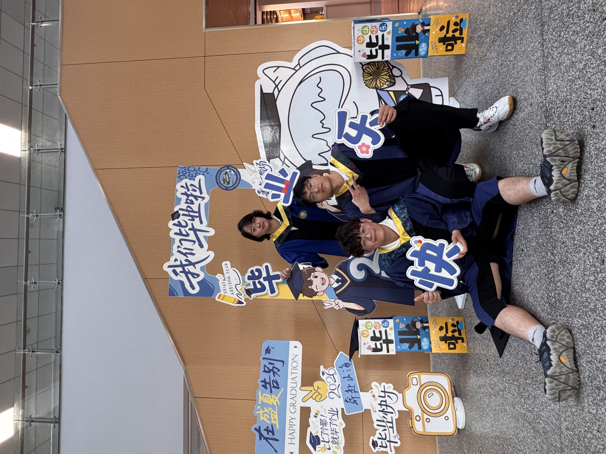
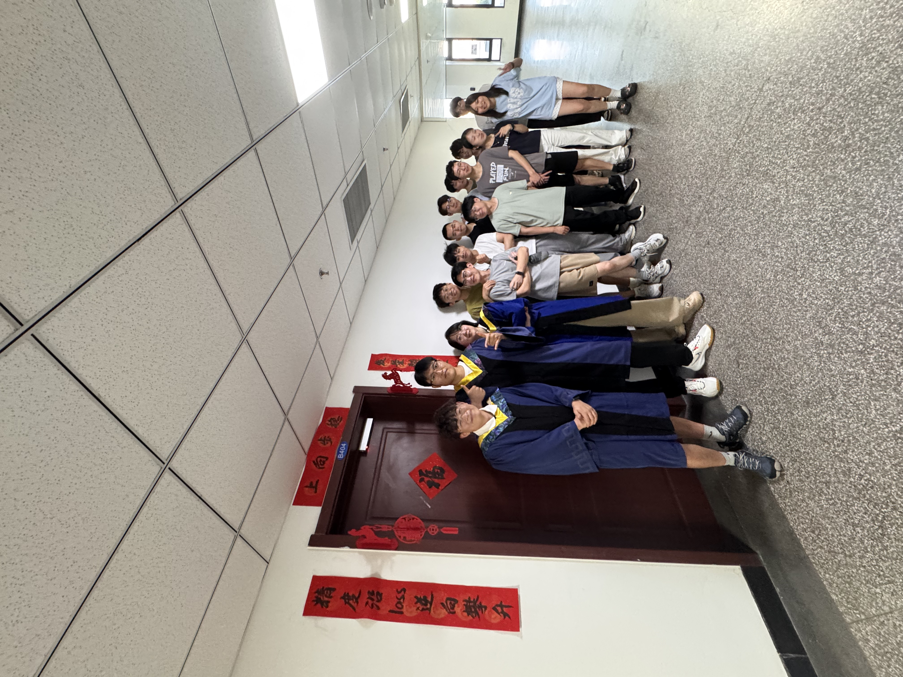
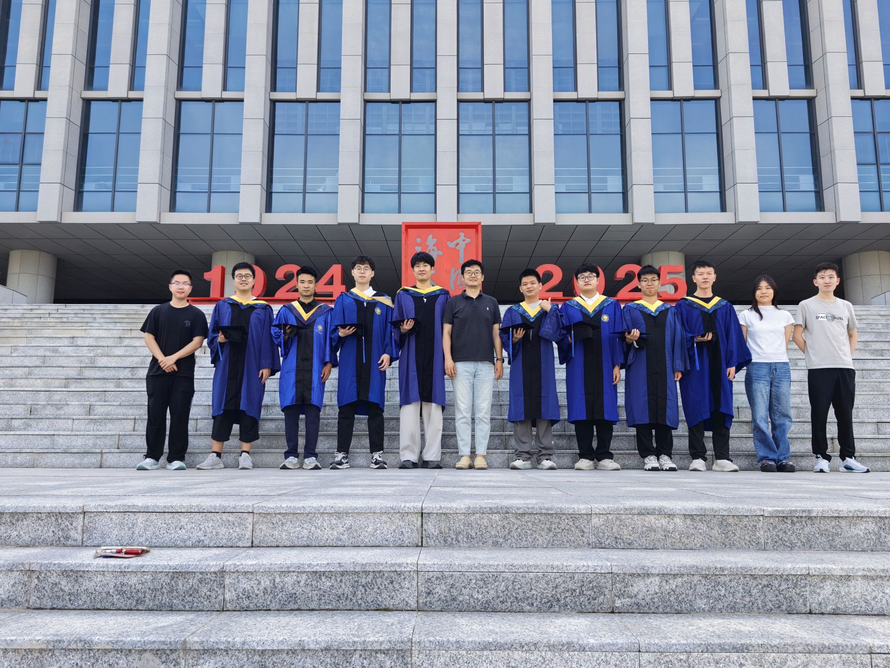

Visual Analysis & Security (VAS) Lab conducts research on Trustworthy Visual Intelligence, with particular interests in multimedia forensics, vision security, and machine learning. Our mission is to analyze, authenticate, and protect visual content against manipulation, misinformation, and malicious misuse, while advancing the theoretical foundations that improve the robustness, security, and trustworthiness of modern AI-driven visual systems. Our research is organized around three major directions:
- Multimedia Forensics. Developing advanced forensic algorithms for images, videos, and audio to detect, localize, and analyze manipulated or AI-generated content, covering both passive and active defense in both general-purpose and face-centric scenarios.
- Vision Algorithms. Studying computer vision and machine learning algorithms for visual understanding and modeling, aiming to support the development of robust, reliable, and secure visual intelligence systems.
- Vision Security. Investigating the vulnerabilities of vision models, including adversarial and backdoor attacks, data security, and model privacy, as well as secure deployment in real-world applications, to improve the robustness, reliability, and security of visual intelligence systems.
We are always looking for motivated students who are passionate about research and emerging technologies, especially those with strong interests in mathematics and programming, to join our lab. If you are interested, please drop me an email with your CV at liyuezun [AT] ouc.edu.cn.
🔉 Optimism is a happiness magnet — Mary Lou Retton
PhD students


Delong Zhu
朱德龙
2026 PhD
Face forensics
Master students

Mengxin Fu
符梦鑫
2024 Master
Face forensics

Zhengxuan Zhang
张证炫
2024 Master
Image forensics

Zihe Wei
魏子贺
2024 Master
Face forensics

Keji Song
宋科技
2025 Master
Face forensics

Junmin Hu
胡俊敏
2025 Master
Face forensics

Hanqing Huang
黄汉卿
2025 Master
Face forensics

Kairui Shang
商恺瑞
2025 Master
Face forensics

Xiang Wang
王祥
2025 Master
Video forensics

Zhiqiang Zheng
郑志强
2025 Master
Face forensics

Bin Wang
王斌
2025 Master
Face forensics

Xingping Wang
王星苹
2025 Master
Face forensics

Yixuan Liu
刘懿萱
2025 Master
Image forensics

Kaiyuan Xiao
肖开元
2025 Master
Face forensics

Junlin Lai
赖俊霖
2025 Master
Face forensics

Alumni
| Name | Grade | Program | First job | Achievements |
|---|---|---|---|---|
| Delong Zhu（朱德龙） | 2023-2026 | Master | 中国海洋大学（读博） | TDSC*1, Enterprise Scholarship*1 |
| Shuaiwei Yuan（袁帅威） | 2023-2026 | Master | 中科曙光 | CVPR*1, Enterprise Scholarship*1 |
| Xinjie Cui（崔欣洁） | 2023-2026 | Master | 复旦大学（读博） | TPAMI*1, CVPR*1, Enterprise Scholarship*1 |
| Qingxuan Lv（吕清轩） | 2021-2025 | PhD | 青岛理工大学 | TIFS*1, TCSVT*2, National Scholarship*1 |
| Yunfei Li（李云飞） | 2022-2025 | Master | 哈尔滨工业大学（读博） | WACV*1 (Oral) |
| Zengqiang Chen（陈增强） | 2022-2025 | Master | 菏泽市招商局 | CCBR*1 |
| Ying Zhang（张迎） | 2022-2025 | Master | ⼭东省农村信⽤社联合社 | BMVC*1 |
| Dongliang Zhang（张东亮） | 2022-2025 | Master | 招银⽹络科技（杭州） | ACCV*1 |
| Yangxiang Zhang（张仰祥） | 2022-2025 | Master | 中国光⼤银⾏（⻘岛） | BMVC*1 |
| Hanzhe Li（李汉哲） | 2022-2025 | Master | 中国⼯商银⾏江⻄省分⾏ | NeurIPS*1, National Scholarship*1 |
| Xudong Wang（王旭东） | 2022-2025 | Master | 美团（北京） | ICME*1 |
| Jinkun Jiang（姜锦琨） | 2022-2025 | Master | 中国海洋大学（读博） | TIP*1 |
| Yang Yu（于阳） | 2022-2025 | Master | 中国海洋大学（读博） | TCSVT*1 |
| Tengjia Kang（康腾甲） | 2022-2025 | Master | 哈尔滨工业大学（读博） | PG*1, National Scholarship*1 |
| Jiucui Lu（陆久翠） | 2021-2024 | Master | 山东大学（读博） |
TIFS*1, ICME*1 |
2026




2025




2024


2023


😉 Funnies


2026


2025
Celeb-DF++ (Arxiv'25)
Celeb-DF++: A Large-scale Challenging Video DeepFake Benchmark for Generalizable Forensics.


Forensics Adapter (CVPR'25)
Forensics Adapter: Adapting CLIP for Generalizable Face Forgery Detection.


TSOM (WACV'25)
Texture, Shape, Order, and Relation Matter: A New Transformer Design for Sequential DeepFake Detection.


HRGR (ICME'25)
HRGR: Enhancing Image Manipulation Detection via Hierarchical Region-aware Graph Reasoning.


2024


DomainForensics (TIFS'24)
DomainForensics: Exposing Face Forgery across Domains via Bi-directional Adaptation.


ForensicsForest Family (TIFS'24)
ForensicsForest Family: A Series of Multi-scale Hierarchical Cascade Forests for Detecting GAN-generated Faces.


COMICS (TCSVT'24)
COMICS: End-to-end Bi-grained Contrastive Learning for Multi-face Forgery Detection.


Mumpy (BMVC'24)
Mumpy: Multilateral Temporal-view Pyramid Transformer for Video Inpainting Detection.


FastForensics (BMVC'24)
FastForensics: Efficient Two-Stream Design for Real-Time Image Manipulation Detection.